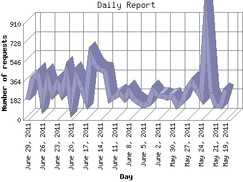

The Daily Report identifies the activity for each day within the reporting period. Remember that one page hit can result in several server requests as the images for each page are loaded.

| Day | Number of requests | Number of page requests | |
|---|---|---|---|
| 1. | May 19, 2011 | 290 | 1 |
| 2. | May 20, 2011 | 130 | 0 |
| 3. | May 21, 2011 | 138 | 0 |
| 4. | May 22, 2011 | 260 | 0 |
| 5. | May 23, 2011 | 905 | 1 |
| 6. | May 24, 2011 | 221 | 0 |
| 7. | May 25, 2011 | 295 | 0 |
| 8. | May 26, 2011 | 363 | 0 |
| 9. | May 27, 2011 | 302 | 0 |
| 10. | May 28, 2011 | 179 | 0 |
| 11. | May 29, 2011 | 138 | 0 |
| 12. | May 30, 2011 | 226 | 1 |
| 13. | May 31, 2011 | 214 | 0 |
| 14. | June 1, 2011 | 229 | 0 |
| 15. | June 2, 2011 | 228 | 1 |
| 16. | June 3, 2011 | 284 | 1 |
| 17. | June 4, 2011 | 157 | 1 |
| 18. | June 5, 2011 | 139 | 0 |
| 19. | June 6, 2011 | 168 | 0 |
| 20. | June 7, 2011 | 203 | 0 |
| 21. | June 8, 2011 | 278 | 0 |
| 22. | June 9, 2011 | 200 | 0 |
| 23. | June 10, 2011 | 252 | 1 |
| 24. | June 11, 2011 | 225 | 0 |
| 25. | June 12, 2011 | 196 | 0 |
| 26. | June 13, 2011 | 464 | 0 |
| 27. | June 14, 2011 | 476 | 1 |
| 28. | June 15, 2011 | 519 | 0 |
| 29. | June 16, 2011 | 612 | 0 |
| 30. | June 17, 2011 | 198 | 0 |
| 31. | June 18, 2011 | 318 | 1 |
| 32. | June 19, 2011 | 420 | 3 |
| 33. | June 20, 2011 | 159 | 0 |
| 34. | June 21, 2011 | 438 | 0 |
| 35. | June 22, 2011 | 258 | 0 |
| 36. | June 23, 2011 | 354 | 0 |
| 37. | June 24, 2011 | 254 | 0 |
| 38. | June 25, 2011 | 392 | 0 |
| 39. | June 26, 2011 | 178 | 2 |
| 40. | June 27, 2011 | 443 | 0 |
| 41. | June 28, 2011 | 400 | 0 |
| 42. | June 29, 2011 | 194 | 0 |
Most active day August 13, 2010 : 23 pages sent. 905 requests handled.
Daily average: 0 pages sent. 292 requests handled.
This report was generated on June 30, 2011 13:55.
Report time frame January 7, 2010 00:29 to June 29, 2011 23:54.
| Web statistics report produced by: analog 6.0 / Report Magic 2.21 |